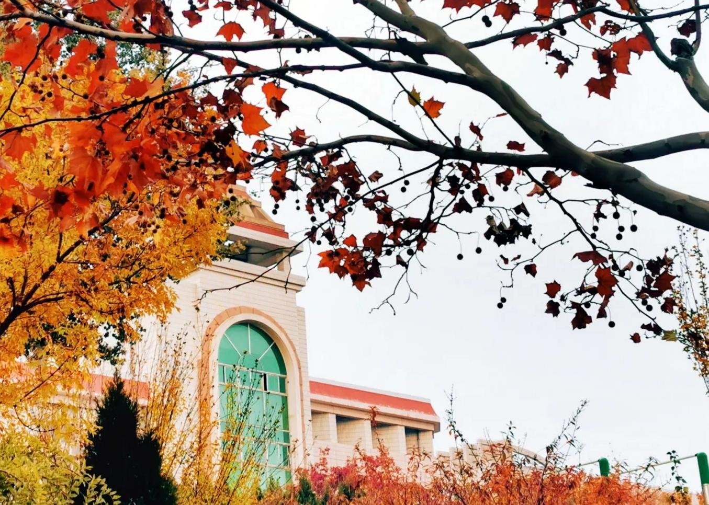
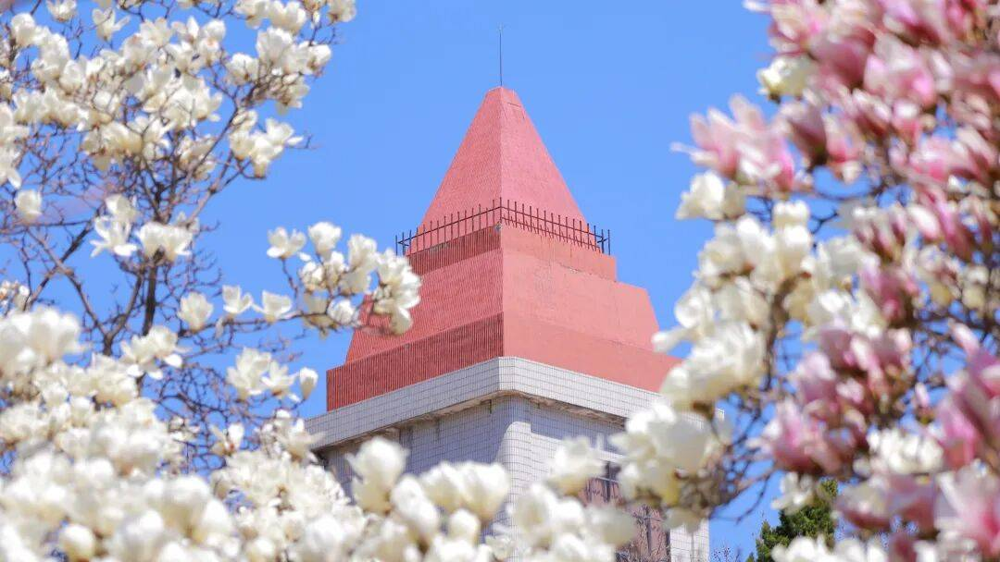
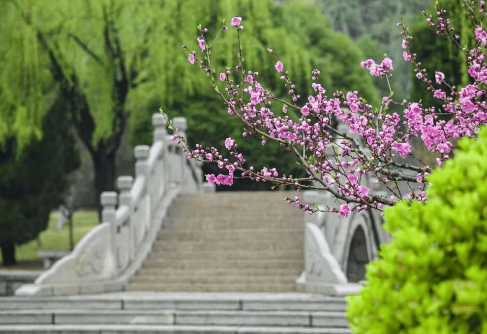
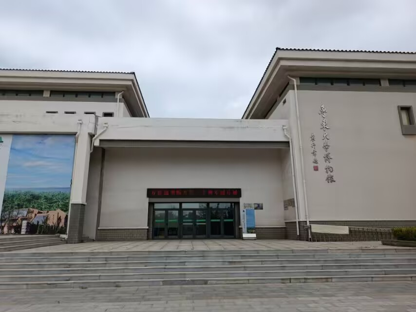
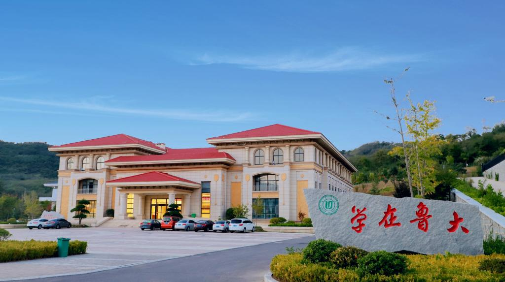
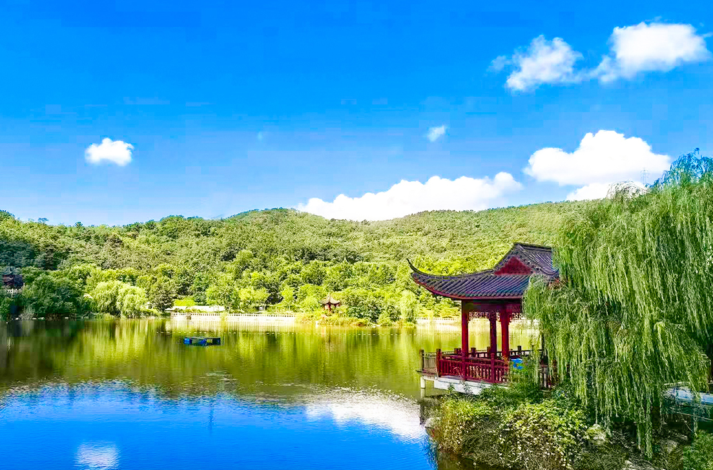

自然风光
当料峭的寒风彻底散去，温柔的春风便踏着轻盈的脚步，漫进了校园的每一寸角落，将沉睡了一冬的生机，尽数唤醒。校园的春，从来都是悄然而热烈的，
没有喧嚣的宣告，却在一草一木、一砖一瓦间，晕染出最动人的诗意。最先感知到春意的,是湖畔的垂柳。原本干枯的枝条上，悄悄冒出了嫩黄的新芽，
一点点，一簇簇，慢慢舒展成纤细的嫩叶，远看如一层朦胧的绿纱，轻笼在岸边。微风掠过，万千柳丝轻轻摇曳，拂过平静的湖面，搅碎了水中倒映的楼宇与云天，漾开一圈圈温柔的涟漪。湖边的玉兰开得正盛，
洁白、淡粉、浅紫的花瓣层层舒展，饱满而温润，高高缀在枝头，不与繁花争艳，却自带一份清雅脱俗的气质。阳光倾洒下来，花瓣透着柔和的光晕，风一吹，零星花瓣悠悠飘落，
铺在青石小径上，踩上去绵软无声，仿佛踏入了一场温柔的春梦。
往校园深处走去，樱花、海棠次第绽放，粉白的花团簇拥在枝头，密密匝匝，如云似霞。阳光穿过花枝，在地上投下斑驳交错的光影，也落在往来学子的肩头。
他们身着简约的衣衫，或捧着书本缓步走过花下，书页被春风轻轻翻动，墨香与花香交织在一起，沁人心脾；或三两成群，坐在青草地上低声交谈，言语间满是青春的朝气与对未来的憧憬；亦有人驻足花前，拿起手机定格这春日美景，让美好瞬间定格在时光里。
教学楼的窗棂敞开着，朗朗的读书声随风飘出，与林间清脆的鸟鸣相映成趣。朱红的钟楼矗立在春光里，古朴的建筑被繁花环绕，少了几分平日的庄重，多了几分温柔的诗意。春日的校园，是自然景致与青春气息的完美交融，繁花不负时节，少年不负春光，
每一缕风都带着温暖，每一寸光都饱含希望，在这片充满书香的土地上，书写着生生不息的美好。



人文景观
- 博物馆:乳子湖畔,集校史馆、书画馆、民艺馆于一体,展现鲁大90余年校史与胶东文化。
- 乳子湖:鲁东大学北区核心景观湖，湖光映山，是鲁大标志性的自然与人文交融地标。
- 学术中心:红顶米墙，风格典雅。是校园学术交流、会议展览与艺术活动的核心场馆。


